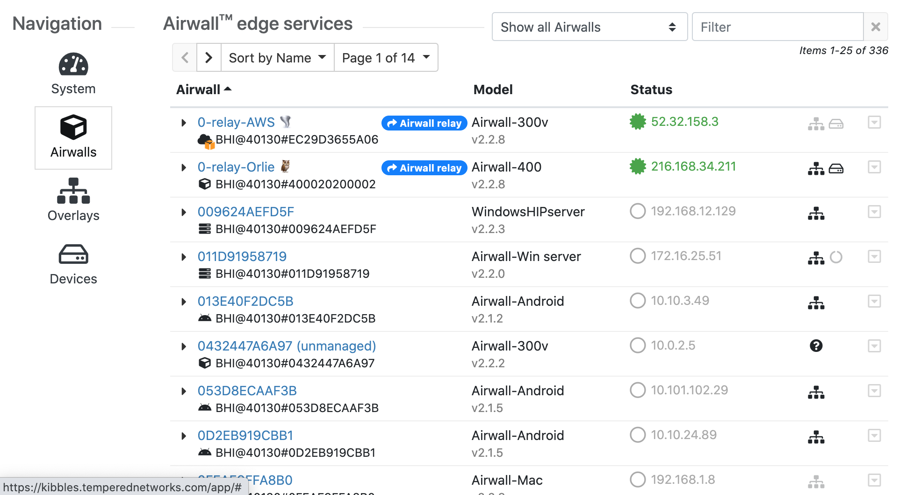

The Conductor Dashboard
The Conductor Dashboard gives you a quick view into the health and state of your Airwall secure network, showing you activity and alerting across the entire network.
With the Dashboard, you can, depending on your permissions:
- See the state of the overlay networks that make up your Airwall secure network.
- See activity without needing management rights.
- Manage Airwall Edge Services and troubleshoot connection issues.
- Monitor the health of your network.
- See at a glance changes within the system.
View network status
See the models and versions of Airwall Edge Services, and the overall system throughput for up to the last 24 hours.
The System stats are tiles that show at a glance how many Airwall Gateways and Airwall Agents and Servers are online, how many can be updated, and other useful information.
Click a stat tile to show more details in the Navigation pane below. For example, click Airwall agents online to see a list of the Airwall Agents and Servers that are online below.
Pin pages and Recently Viewed lists for quick access
Right under the menu bar, you will now find a pin bar, where you can pin up to 20 pages you visit frequently to quickly get back them. You can click the arrow on the right to see and pin Recently viewed items. On most pages, you can also click the pin icon to add the page to your pin bar. Click it again to remove the pin.
Navigation – System
- To create a message, select the pencil icon. For more details, see Create or Manage Dashboard Messages.
- Under Recent events, select View on items to jump right to the page, or select Manage to manage and name without leaving the dashboard.
Navigation – Airwalls
- Select an Airwall Edge Service name to open it.
- Click one of the Airwall System stats tiles to see the details.
- Filter which Airwall Edge Services you see:
- In the Show all Airwalls box, select an Airwall status (such as offline or unmanaged) to view.
- Type in the Filter box to filter on name or model, or other aspects of the Airwall Edge Services, like Tags.

Navigation – Overlays
- Select New to create a new Overlay. For more details, see Create an overlay network.
- Type in the Filter box to filter by Name.
- Select the drop-down menu to edit, tag, or disable the Overlay.
- Select an Overlay name to open it.
Navigation – Devices
- Select a device to go to that device.
- Click the Total Devices System stats tile to open the Devices navigation page.
- Filter which Devices
you see:
- Select the Sort by box to sort the devices.
- Type in the Filter box to filter by Device name or Overlay IP, among other things.
Navigation – Provisioning
- Select one or more Airwall Edge Services and grant or deny the provisioning requests. Check next to the Airwall Edge Services, then from the Actions menu, select Grant request or Deny request.
- Filter which Airwall Edge Services you see:
- Sort the Airwall Edge Services by any column by clicking on the column .
- Type in the Filter box to filter by Model or Identifier, or other things.